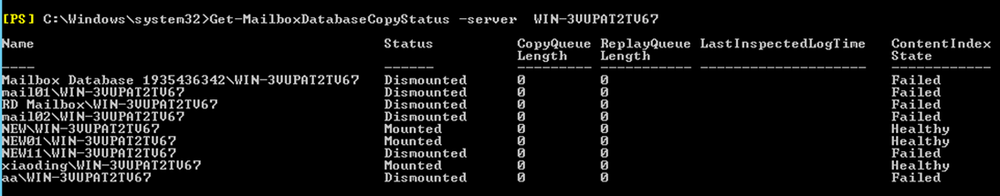

执行数据库备份前，需确保Exchange存在已装载的数据库并且状态正常，参考本节执行相关检查。

操作步骤
- 管理员登录Exchange Server数据库所在的客户端，打开Exchange Management Shell工具。
- 执行Get-MailboxDatabaseCopyStatus命令查看服务器上的数据库状态。后续步骤以服务器为WIN-3VUPAT2TV67为例进行操作。
- 执行以下命令查询数据库状态。
Get-MailboxDatabaseCopyStatus -server WIN-3VUPAT2TV67
回显Status的状态为Mounted表示数据库装载状态正常。
